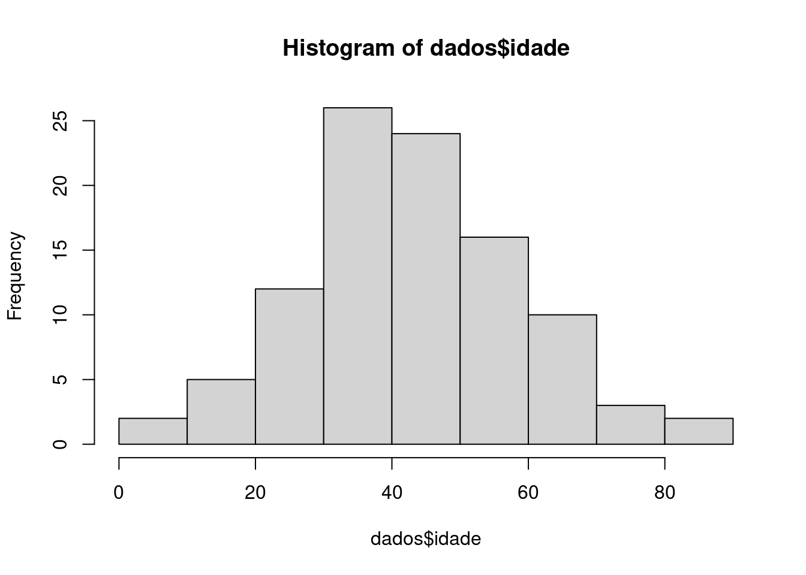
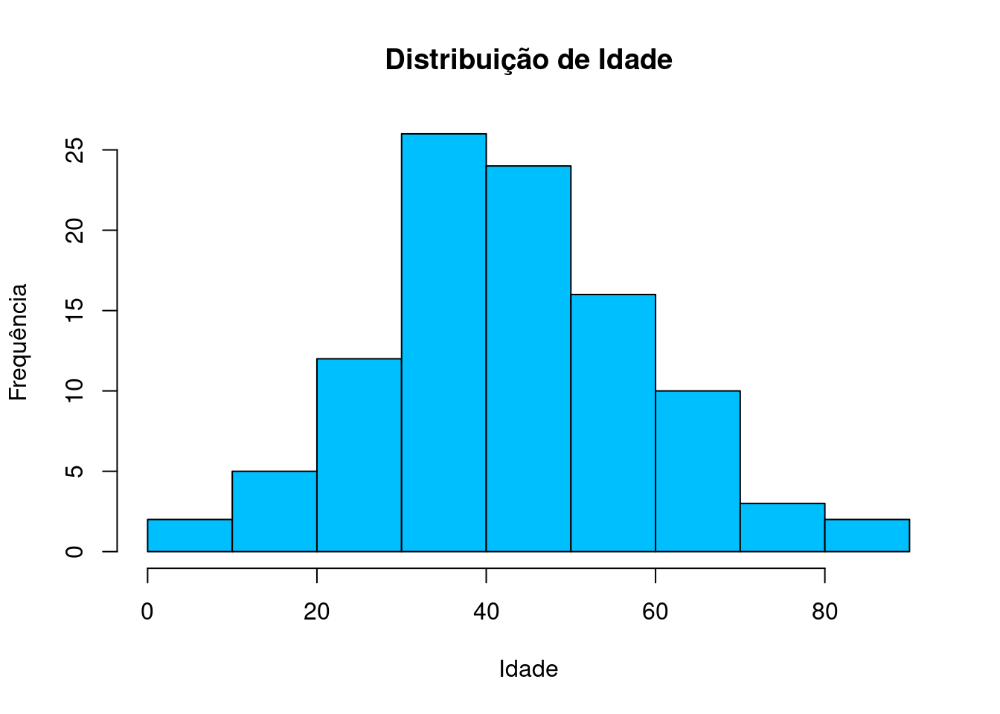
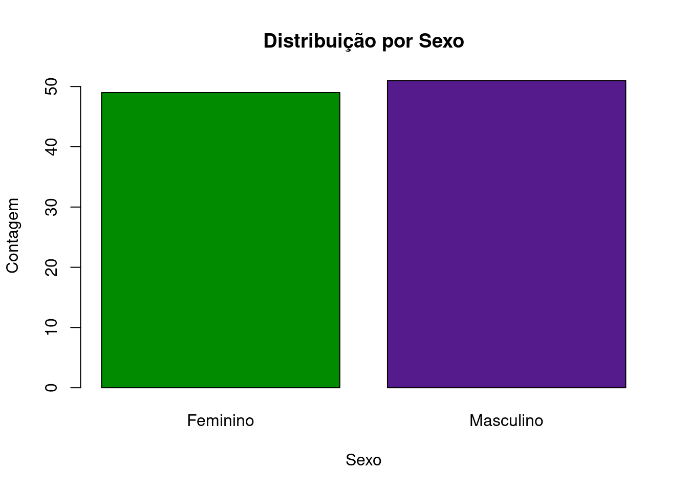
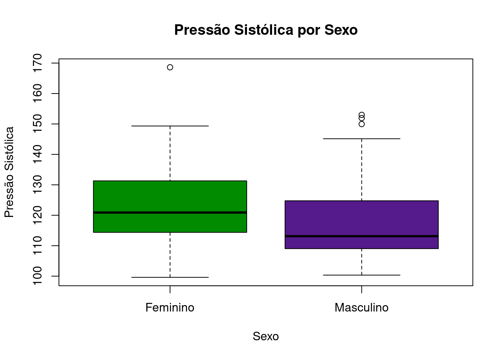
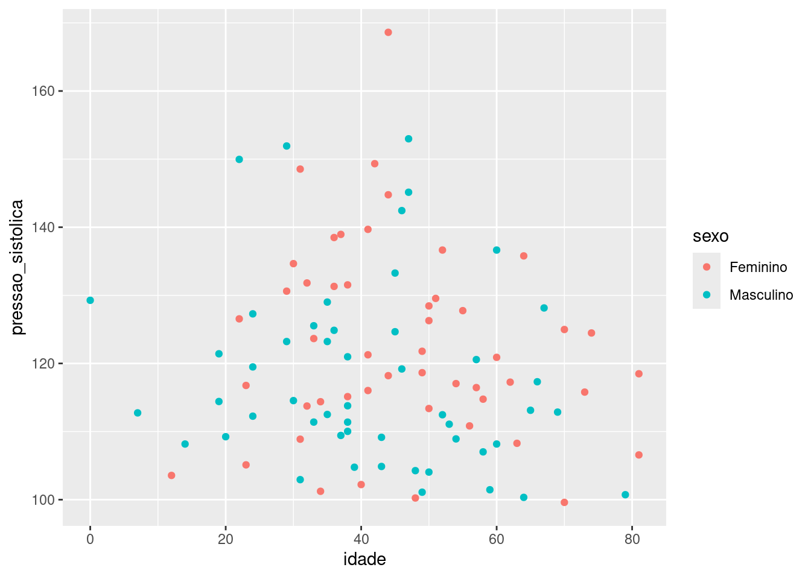

6 Visualização de dados
A visualização é uma tarefa fundamental em todo o processo de análise de dados, desde a análise exploratória, onde compreendemos o banco e retiramos os primeiros insights, até etapas mais avançadas de modelagem e validação de resultados.
Para auxiliar na tarefa de gerar visualizações no R, vamos primeiro gerar, aleatoriamente, um conjunto de dados de exemplo.
Vamos utilizar as funções rnorm(), para geração de números aleatórios, e sample(), para amostrar também aleatoriamente de um conjunto de valores possíveis.
Usamos a função set.seed() apenas para garantir a reprodutibilidade dos resultados.
6.1 Gerando um conjunto de dados de exemplo
set.seed(123)
dados <- data.frame(
id = 1:100,
idade = round(rnorm(100, mean=42, sd=18)),
sexo = sample(c("Masculino", "Feminino"), 100, replace = TRUE),
pressao_sistolica = rnorm(100, 120, 15),
pressao_diastolica = rnorm(100, 80, 10),
colesterol = rnorm(100, 200, 30)
)
head(dados)## id idade sexo pressao_sistolica pressao_diastolica colesterol
## 1 1 32 Feminino 131.8161 76.24397 230.4483
## 2 2 38 Feminino 131.5356 74.38124 140.2175
## 3 3 70 Feminino 124.9830 76.56083 187.1816
## 4 4 43 Masculino 104.8744 80.90497 203.4991
## 5 5 44 Feminino 118.2082 95.98509 173.2038
## 6 6 73 Feminino 115.7941 79.11435 210.01716.2 Gráficos com R base
O R por si já possui diversas funcionalidades para geração e customização de visualizações. Vamos explorar algumas delas.
6.2.1 Histogramas
Os histogramas são úteis para visualização da distribuição de uma variável contínua. Aqui, vamos olhar a distribuição da idade:
 Podemos melhorar a nossa visualização ao especificar parâmetros de customização à função:
hist(dados$idade, main = "Distribuição de Idade", xlab = "Idade", ylab = "Frequência", col = "deepskyblue", border = "black")
6.2.2 Gráficos de barras
Utilizados majoritariamente para variáveis categóricas, os gráficos de barras são úteis para mostrar a frequência, absoluta ou relativa, ou alguma outra métrica em cada categoria:
tab <- table(dados$sexo)
barplot(tab, main = "Distribuição por Sexo", col = c("green4", "purple4"), xlab = "Sexo", ylab = "Contagem")
6.2.3 Gráficos de Dispersão
Gráficos de dispersão (scatterplots) são úteis para analisar possíveis relações entre duas variáveis contínuas. Vamos utilizar nossos dados aleatórios de pressão sistólica e diastólica.
plot(dados$pressao_sistolica, dados$pressao_diastolica, main = "Relação entre Pressão Sistólica e Diastólica", xlab = "Pressão Sistólica", ylab = "Pressão Diastólica", pch = 19, col = "blue")
6.2.4 Boxplots
Por fim, os boxplots são frequentemente usados para analisar a distribuição de uma variável contínua. Um boxplot, ou diagrama de caixa, é uma representação gráfica que resume a distribuição de um conjunto de dados. Ele mostra a mediana, quartis, e possíveis valores atípicos de uma variável contínua.
A caixa formada no gráfico representa o intervalo interquartil (IQR), que é a diferença entre o primeiro quartil (Q1, o 25º percentil) e o terceiro quartil (Q3, o 75º percentil) da variável. A linha dentro da caixa representa a mediana. Os “bigodes” estendem-se dos quartis até o valor mais extremo que não é considerado um outlier (distância calculada tipicamente como sendo 1,5 vezes o IQR). Os outliers, portanto, são pontos que estão além dos bigodes, representando observações mais extremas, ou aberrantes, e são plotados no gráfico como pontos individuais.
Vamos gerar os boxplots da pressão sistólica de acordo com sexo:
boxplot(pressao_sistolica ~ sexo, data = dados, main = "Pressão Sistólica por Sexo", xlab = "Sexo", ylab = "Pressão Sistólica", col = c("green4", "purple4"))
6.3 Introdução ao {ggplot2}
O ggplot2 é um dos pacotes mais utilizados no R e introduz uma nova gramática de composição de gráficos. Ele possui uma infinidade de possibilidades de customização e geração de todo tipo de gráfico. Muitos estão disponíveis através de extensões desenvolvidas do próprio pacote.
Todo gráfico ggplot inicia-se com um comando ggplot(), onde usualmente informa-se a base de dados com que se irá desenvolver o gráfico. A lógica passa pela especificação do componente de estéticas (aes()), que mapeará cada variável para um componente específica do gráfico, por exemplo: Idade no eixo x, pressão no eixo y, e sexo como cor dos pontos no gráfico. Vamos ver como ficaria esse exemplo:
library(ggplot2)
ggplot(dados, #especificando a base de dados
aes( # informando as estéticas
x = idade, # idade no eixo x
y = pressao_sistolica, # pressao sistolica no eixo y
color = sexo # sexo nas cores do gráfico
)) +
geom_point() # indica que se deseja um gráfico de pontos
Viu só? Essa é a lógica básica de todos os gráficos ggplot. Pode-se especificar estéticas específicas para cada componente do gráfico, como geom_point(), geom_line(), geom_boxplot()… Para mais exemplos de gráficos em ggplot, recomenda-se o material de visualização do curso de Ciência de Dados do Curso-R.